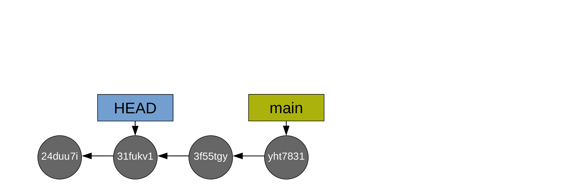
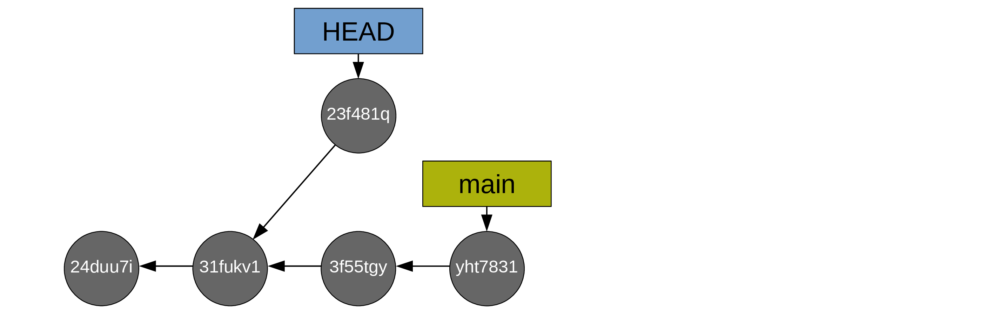
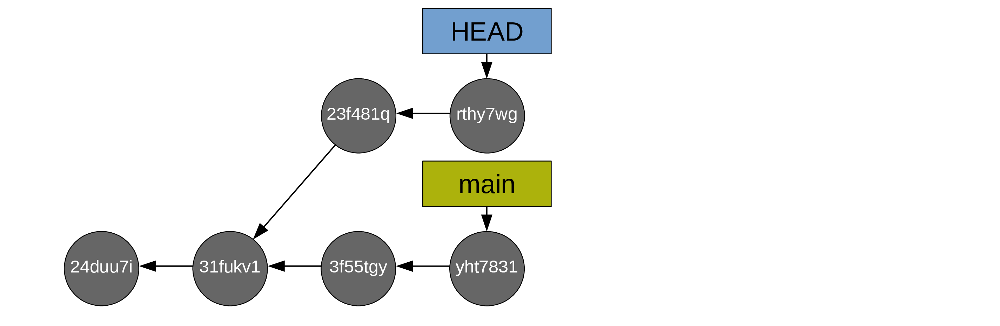
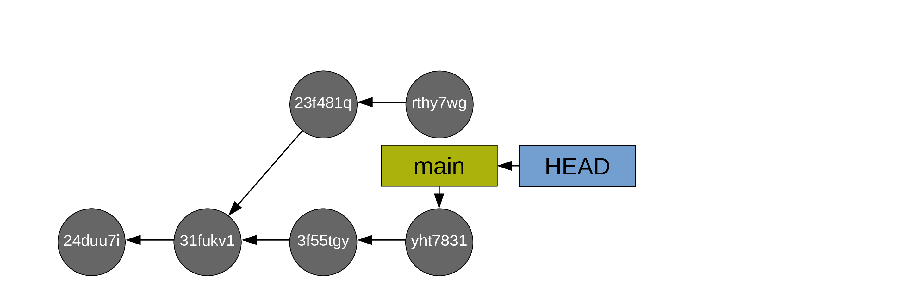
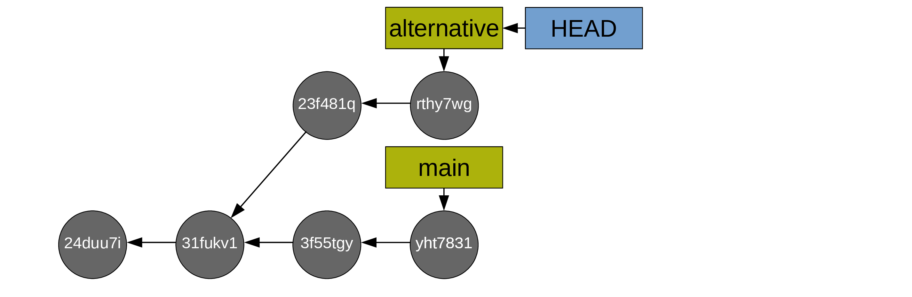
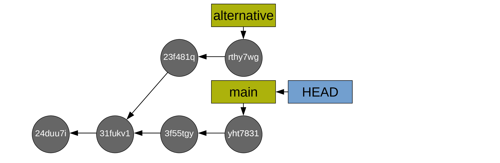

Time travel
It’s great to record history, but if we don’t know how to make use of it, it isn’t exactly useful.
In this workshop, you will travel through the history of a project.
Looking at the past without travelling
HEAD is a little file in the .git directory which points to our current location in the Git history.
You already saw multiple ways to have a glimpse at your project history without moving HEAD:
git logand its many variations shows a list or a tree of your commitsgit showdisplays information about a Git object such as a past commit
Those are useful options, but Git allows you to really travel in your project history: HEAD can be moved around with the command git checkout to point to any branch, tag, or commit.
Travelling through history
As soon as you move HEAD to a new Git object with git checkout, the working directory and the index get updated to match the snapshot that Git object is pointing to. That means that your project will suddenly be back to the state in which it was when you committed that snapshot.
Moving HEAD
Let’s give this a try and move HEAD to a past commit.
Identifying the commit we want to move HEAD to
You can use the ~ notation:
HEAD~orHEAD~1means the commit which precedes the oneHEADis pointing to.HEAD~2means the commit before that.HEAD~3refers to the 3rd commit before the current commit.- etc.
You can also run git log to find the hash of your commit of interest.
Detached HEAD
Let’s look at a hypothetical scenario to see what happens when you checkout a commit.
This is our starting point:

Now, we move HEAD to the commit 31fukv1:
git checkout 31fukv1
Notice that HEAD is not pointing at a branch anymore: it is pointing directly at a commit. This is called a detached HEAD state and Git will give you plenty of warnings about it.
If you look at your files, you will see that they match their state when you committed 31fukv1: your working directory got updated to match the current position of HEAD.
You can look at your project at that point in its history, then go back to your main branch (here main) with:
git checkout main
And that’s that. You took a little trip into the past just to have a look, then came back to “the present” and all went well.
Creating commits from a detached HEAD
Now, when you are at commit 31fukv1, maybe you wanted to try something.
You can safely try anything you want: when you checkout main to come back to “the present”, those experimental changes will get lost.
But what if you want to keep those changes you made at 31fukv1?
In that case, as you always do, you create a commit to archive those changes into the project history:

You can make more commits:

The thing is that you are still in this detached HEAD state. HEAD is not pointing to a branch as it normally is. Is this a problem?
Bad workflow
Well, it becomes a problem if you checkout main from there:

If you decide that you don’t care about those commits after all, then all is good. But if you care about them, this is a bad situation because those commits you created when you were in a detached HEAD state are now left behind: they are not in the history of any branch or tag.
This is bad for three reasons:
- Those commits will not show when you run
git log, so it is easy to forget about them. - It is not easy to go back to them because there aren’t any tag or branch that you can checkout.
- The garbage collection (which runs every 30 days by default) will delete those commits which are not on any branch or tag. So you will ultimately loose them.
Good workflow
A good workflow would have been to create a new branch on 31fukv1 (let’s call it alternative) and switch to it. That way, the commits created from 31fukv1 are on a branch and they will not be deleted by the next garbage collection:

In this good workflow, it is totally safe to switch back to main:

If you want to list the commits 23f481q and rthy7wg when you are back on main, you need to run git log with the --all flag.
Recovering commits left behind
What if you left commits behind (not on a branch)?
You can retrieve their hash by running:
git reflogThis tracks the position of HEAD over time.
You can then checkout the commit you care about (so you are going back to a detached HEAD state):
git checkout <hash-abandonned-commit>This puts you back into a situation where you can rescue the commit(s) by creating a branch:
Do this as soon as you can since those commits will be deleted at the next garbage collection (and finding their hash with git reflog will become increasingly complicated as you wait).